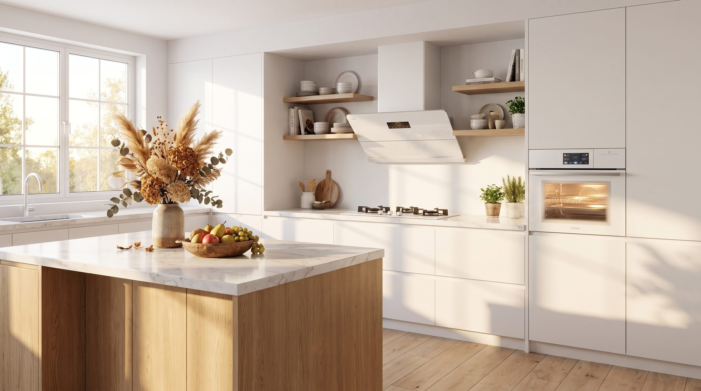
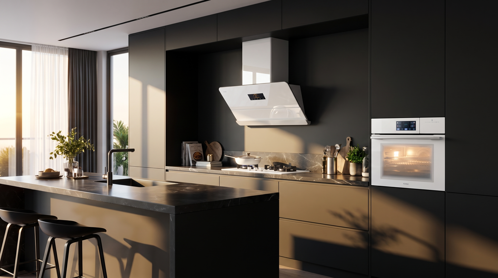
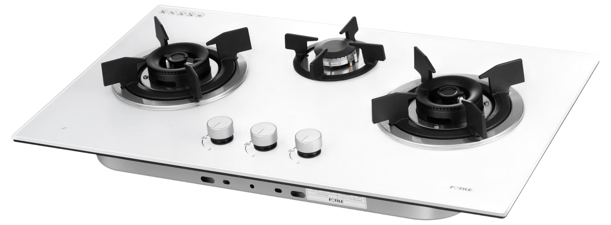
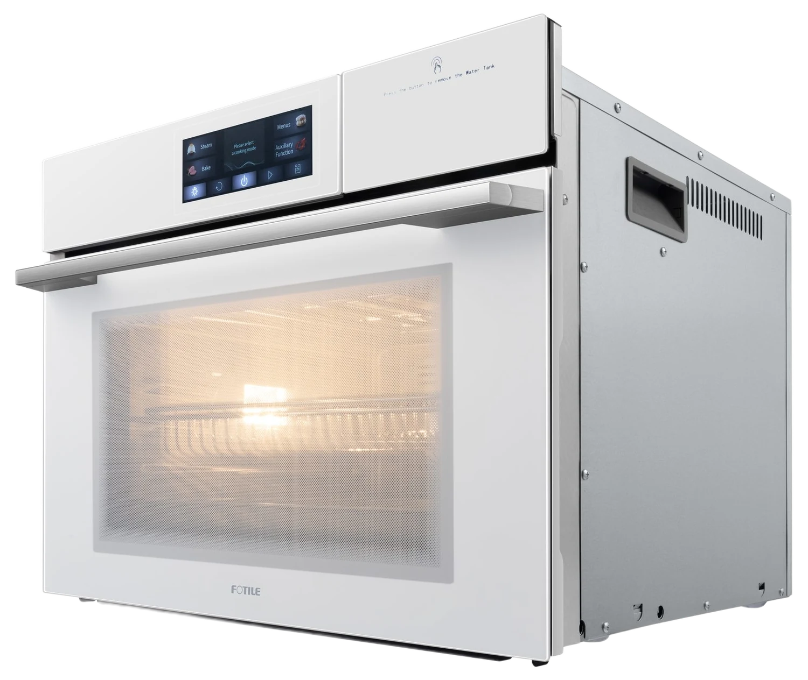
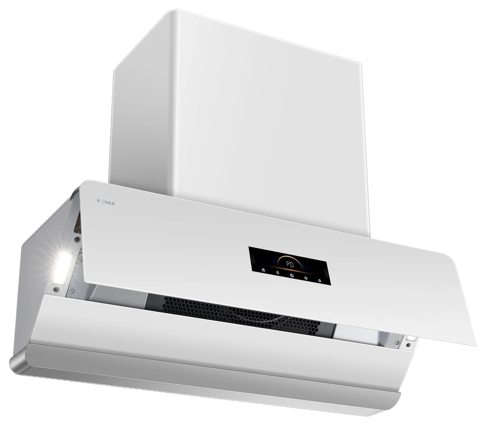

The Feeling
Kitchens should feel like
morning, not machinery.
Every Opal Series piece is finished to disappear into the cabinetry — so the room reads as one calm surface, not a wall of appliances.

An opal looks like plain white stone until light moves through it. The Opal Series is built on that idea — porcelain surfaces that gather the whole room's light and quietly give it back. The Moon Series owns the night. This one owns the morning.
Fotile's Opal Series takes the same relentless engineering behind every Fotile appliance and sets it in the clearest light in the kitchen — porcelain white, unhurried, built for the way morning actually feels.
Move across the stone. Opal has no pigment of its own — the colour is light, bent by the structure underneath. Fotile's porcelain finish works the same way in a kitchen.
Porcelain has no colour of its own — it takes the hour it is standing in. This is one kitchen, one finish, moved from first light to dusk.

Each Opal Series piece is built for kitchens that let the morning in. Click any piece to explore.
A burner set tuned for everything from a slow simmer to a full wok sear, built into a single sheet of tempered white glass that wipes clean in one pass.

Switch between steam and dry heat without switching appliances — delicate dumplings one night, a full roast the next, all behind one softly lit glass door.

A slim wall-mounted silhouette finished in pristine white, built to clear a heavy-cooking kitchen without ever raising its voice.

The benchmark Fotile builds every range hood around.
Request a private consultation and our team will help you specify the Opal Series pieces that fit your kitchen.